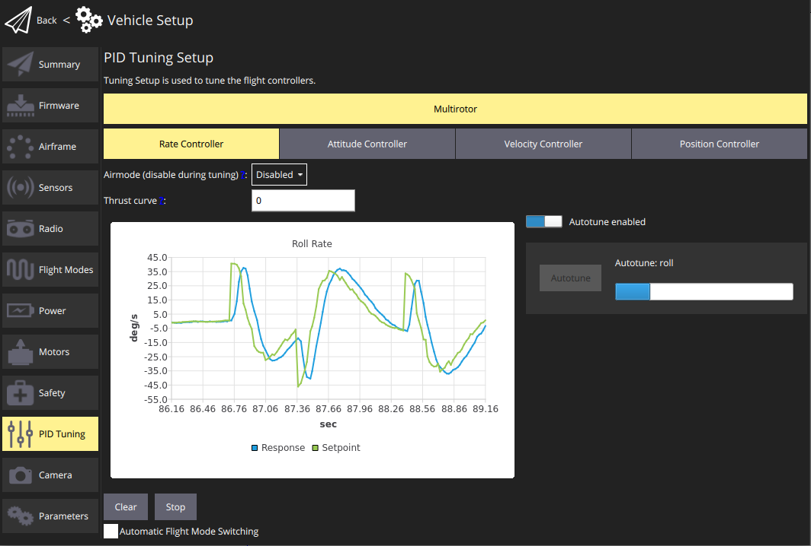
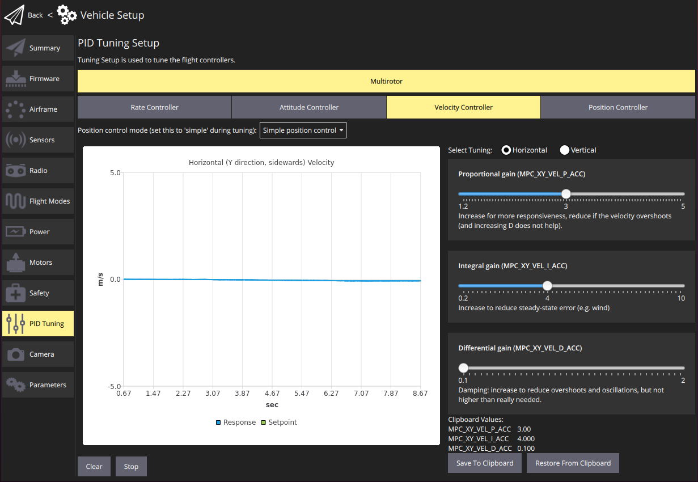
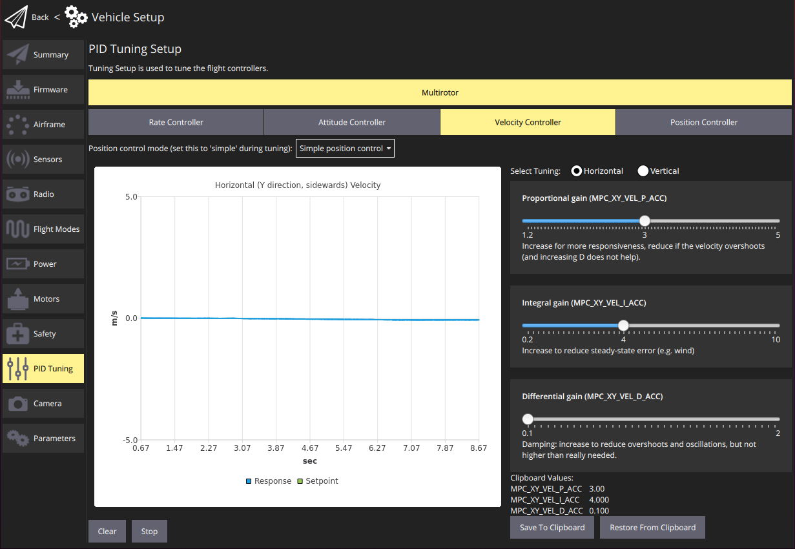

Tuning (PX4)
Tuning only needs to be done once, and is recommended unless you're using vehicle that has already been tuned by the manufacturer (and not modified since).
Auto-tuning should generally be used for frame types and controllers that support it (multicopter, fixed wing, and hybrid VTOL fixed wing vehicles). The tuning UI also supports manual tuning of all controllers.

During Airframe Setup you should have selected the frame that most closely matches your vehicle. This will usually be tuned well enough to fly, and it may also be sufficiently well tuned to run autotuning.
Autotune
Auto-tuning automates the process of tuning the PX4 rate and attitude controllers, which are the most important controllers for stable and responsive flight (other tuning is more "optional").
This guide shows the default usage of this feature. Additional information and configuration can be found in the PX4 Autotuning Guide (PX4 User Guide).
The QGroundControl Autotuning UI is not enabled for Fixed wing vehicles - see qgroundcontrol#10194 (though it is for VTOL vehicles in fixed wing flight). You can start Fixed-wing autotuning by setting the parameter FW_AT_START.
Pre-Autotuning Test
Auto-tuning is performed while flying. The vehicle must be able to fly and adequately stabilize itself before running auto-tune. This test ensures that the vehicle can fly safely in position controlled modes.
To make sure the vehicle is stable enough for auto-tuning:
- Perform a normal preflight safety checklist to ensure the flight zone is clear and has enough space.
- Takeoff and prepare for the test
- Multicopters: Take off and hover at 1m above ground in Altitude mode or Stabilized mode.
- Fixed-wing mode: Take off and fly at cruise speed in Position mode or Altitude mode.
- Use the RC transmitter roll stick to perform the following maneuver, tilting the vehicle just a few degrees: roll left > roll right > center (The whole maneuver should take about 3 seconds). The vehicle should stabilise itself within 2 oscillations.
- Repeat the maneuver, tilting with larger amplitudes at each attempt. If the vehicle can stabilise itself within 2 oscillations at ~20 degrees move to the next step.
- Repeat the same maneuvers but on the pitch axis. As above, start with small angles and confirm that the vehicle can itself within 2 oscillations before increasing the tilt.
If the drone can stabilize itself within 2 oscillations it is ready for the auto-tuning procedure.
If not, see the PX4 User Guide > Autotuning > Troubleshooting.
Auto-tuning procedure
The auto-tuning sequence must be performed in a safe flight zone, with enough space. It takes about 40 seconds (between 19 and 68 seconds). For best results, we recommend running the test in calm weather conditions.
Be ready to abort the autotuning process by moving the RC controller sticks.
The test steps are:
- Perform the pre-tuning test above.
Takeoff using RC control and prepare for test:
- Multicopters: Takeoff using the remote controller in Altitude mode. Hover the vehicle at a safe distance and at a few meters above ground (between 4 and 20m).
- VTOL in Fixed-wing mode: Once flying at cruise speed, activate Hold Mode. This will guide the plane to fly in circle at constant altitude and speed.
In QGroundControl, open the menu: Vehicle setup > PID Tuning

Select either the Rate Controller or Attitude Controller tabs. Ensure that the Autotune enabled button is enabled (this will display the Autotune button and remove the manual tuning selectors).
Stop moving the joysticks and click on the Autotune button. Read the warning popup and click on OK to start tuning.
- The drone will first start to perform quick roll motions followed by pitch and yaw motions. The progress is shown in the progress bar, next to the Autotune button.
- Apply the tuning:
- Fixed Wing: The tuning will be immediately/automatically be applied and tested in flight (by default). PX4 will then run a 4 second test and revert the new tuning if a problem is detected.
- Multicopters: Manually land and disarm to apply the new tuning parameters. Takeoff carefully and manually test that the vehicle is stable.
- If any strong oscillations occur, land immediately and follow the instructions in PX4 User Guide > Autotuning > Troubleshooting.
A video of the process is shown below:
Manual Tuning
Manual tuning is done in-flight, so your vehicle must already be tuned well enough to fly with (this is normally the case if you have selected an appropriate default airframe).
The instructions below explain how you can use the manual tuning UI. It is designed to be read/used in conjustion with the PX4 Manual PID Tuning Guides, which provide more detailed hints on the kinds of step sizes to use when changing PID values.
In overview:
- Takeoff using RC control and prepare for test:
- Multicopters: Takeoff using the remote controller in Altitude mode. Hover the vehicle at a safe distance and at a few meters above ground (between 4 and 20m).
- Fixed-wing: Once flying at cruise speed, activate Hold Mode. This will guide the plane to fly in circle at constant altitude and speed.
- In QGroundControl, open the menu: Vehicle setup > PID Tuning
Select the Rate Controller tab. Ensure that the Autotune enabled button is is turned off.

Select the Tuning axis to tune: Roll, Pitch or Yaw (each axis is tuned separately).
Fly the vehicle, observing the tracking on the chart.
- Adjust the Tuning Values (parameters) to improve the tracking shown on the graph using the slider.
- The values are automatically saved, but you may wish to use the Save to Clipboard and Restore from Clipboard buttons to store the last known good configuration.
- You can also Clear/Stop the chart using the buttons provided.
- Tune the other axes.
Switch to the other controllers and repeat the process. Screenshots of the tuning pages are shown below.
 
